Métodos de Monte Carlo via Cadeias de Markov
Metropolis random walk e amostrador independente
Fernando P. Mayer
1 Introdução
Em situações em que \(\theta\) (ou \(X\)) tem dimensão elevada, o procedimento a ser apresentado é geralmente mais eficiente para gerar quantidades aleatórias.
Segue abaixo uma descrição das probabilidades de transição especificadas conforme algumas das alternativas que podem ser adotadas para implementar o algoritmo de Metropolis-Hastings.
O procedimento mais geral será visto na sequência.
2 Metropolis-Hastings
O algoritmo de Metropolis-Hastings gera uma cadeia de Markov \(\{X_0, X_1, \ldots\}\) conforme definido abaixo.
- Defina uma distribuição proposta \(g(\cdot|X_t)\)
- Defina um valor inicial \(X_0\), dentro do domínio de \(g\)
- Repita os seguintes passos até convergir para uma distribuição estacionária:
- Gere um valor candidato \(Y=X_{t+1}\) a partir de \(g(\cdot|X_t)\) (note que o valor candidato é dependente do valor anterior)
- Gere \(U\) de uma \(\text{U}(0,1)\)
- Calcule a taxa de aceitação \[ \alpha(X_t, Y) = \min \left( \frac{f(Y)g(X_t|Y)}{f(X_t)g(Y|X_t)}, 1 \right) \] Se \[ U \leq \alpha(X_t, Y) \] aceite \(Y\) e faça \(X_{t+1}=Y\); caso contrário faça \(X_{t+1}=X_t\)
Observações:
- Note que só precisamos conhecer o núcleo da densidade alvo \(f\), ou seja, não é necessário saber a constante de integração (ou de normalização), uma vez que, mesmo sem essa constante, a densidade de \(f\) será proporcional.
- Se a distribuição proposta for adequada, a “cadeia” de Metropolis-Hastings irá convergir para uma distribuição estacionária única \(\pi\).
- O algoritmo foi desenvolvido de forma que a distribuição estacionária da cadeia é de fato a distribuição alvo \(f\).
3 Metropolis Random Walk
O algoritmo de Metropolis-Hastings é uma generalização do algoritmo de Metropolis random walk. Nesse caso, a particularização é que no algoritmo de Metropolis, a distribuição proposta deve ser obrigatoriamente simétrica.
Um random walk ou “passeio aleatório” é uma equação recursiva, que basicamente diz que uma observação no tempo \(t+1\) depende da observação no temo \(t\) e de um ruído. Matematicamente: \[ x_{t+1} = x_t + \epsilon \] onde \(\epsilon \sim g\), e \(g\) é uma distribuição simétrica ao redor de zero.
## Simulação de um random walk
rw1 <- function(T, x1, seed) {
x <- numeric(T)
x[1] <- x1
set.seed(seed)
e <- rnorm(T)
for(t in 1:(T - 1)) {
x[t + 1] <- x[t] + e[t]
}
return(x)
}
par(mfrow = c(2, 1))
plot(rw1(T = 100, x1 = 10, seed = 1), type = "l",
xlab = "Tempo", ylab = "x")
plot(rw1(T = 1000, x1 = 10, seed = 1), type = "l",
xlab = "Tempo", ylab = "x")
par(mfrow = c(1, 1))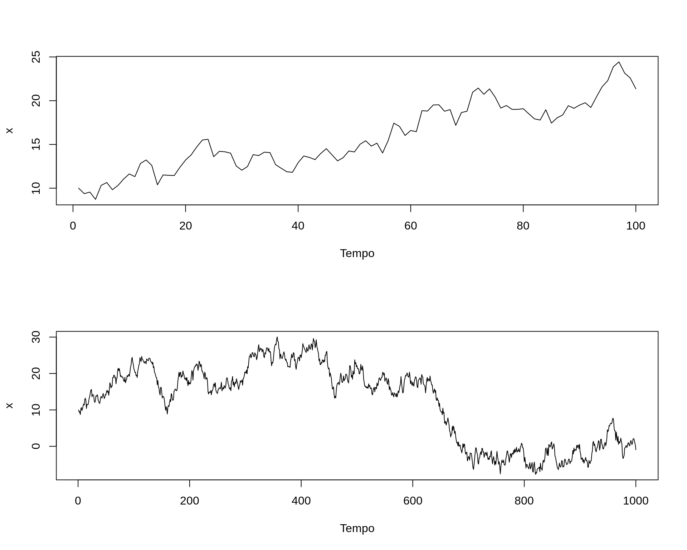 Podemos escrever essa equação como uma diferença sucessiva, \[ x_{t+1} - x_t = \epsilon \] Ou seja, conhecendo \(x_t\), a distribuição de \(x_{t+1}\) será apenas uma função de \(\epsilon\), \[ g(x_{t+1}|x_t) = g(\epsilon) \] Como \(g\) é simétrica, então \[ g(x_{t}|x_{t+1}) = g(-\epsilon) = g(\epsilon) \]
Sendo assim, se \(g(\cdot|X_t)\) é simétrica, podemos dizer que
\[ g(X_t|Y) = g(Y|X_t) \]
Portanto, a taxa de aceitação fica agora simplificada
\[ \begin{aligned} \alpha(X_t, Y) &= \min \left( \frac{f(Y)g(X_t|Y)}{f(X_t)g(Y|X_t)}, 1 \right) \\ &= \min \left( \frac{f(Y)}{f(X_t)}, 1 \right) \end{aligned} \]
Sendo assim, se um valor candidato \(Y = X_{t+1}\) é gerado a partir de uma distribuição proposta simétrica, então a probabilidade da cadeia se mover de \(X_t\) para \(X_{t+1}\) depende apenas da distância entre eles, i.e. \(g(X_{t+1}|X_t) = g(|X_{t+1} - X_t|)\). Então, a cada iteração, um increment \(Z\) é gerado a partir de \(g(\cdot)\), e \(Y\) é definido como \(Y = X_t + Z\) (veja que é a própria definição de random walk).
O incremento aleatório \(Z\) pode ser, por exemplo, normal com média zero, de forma que o valor candidadto é \(Y|X_t \sim \text{N}(X_t, \sigma^2)\), para algum \(\sigma^2 > 0\) constante. No enatnto, o incremento \(Z\) também pode ser proveniente de uma distribuição uniforme no intervalo \((-\delta, \delta)\), por exemplo.
Assim, o algoritmo de Metropolis random walk pode ser definido da seguinte forma:
- Defina uma distribuição proposta \(g\) simétrica
- Defina um valor inicial \(X_0\), dentro do domínio de \(f\)
- Repita os seguintes passos até convergir para uma distribuição estacionária:
- Gere um valor candidato \(Y \equiv X_{t+1} = X_t+Z\)
- Gere \(U\) de uma \(\text{U}(0,1)\)
- Calcule a taxa de aceitação \[ \alpha(X_t, Y) = \min \left( \frac{f(Y)}{f(X_t)}, 1 \right) \] Se \[ U \leq \alpha(X_t, Y) \] aceite \(Y\) e faça \(X_{t+1}=Y\); caso contrário faça \(X_{t+1}=X_t\)
3.1 Exemplo com uniforme
Suponha que se deseja gerar valores de uma normal padrão, usando como distribuição proposta uma \(\text{U}(-\delta, \delta)\).
- Simule \(z \sim \text{U}(-\delta, \delta)\) e faça \(Y = X_t+Z\)
- Calcule a probabilidade de aceitação \(\alpha(X_t, Y) = \min \left( \frac{f(Y)}{f(X_t)}, 1 \right)\), onde \(f\) é a densidade da normal padrão
- Simule \(u \sim \text{U}(0,1)\). Se \(u \leq \alpha(X_t, Y)\), então \(X_{t+1}=Y\); caso contrário \(X_{t+1}=X_t\)
f <- function(x) dnorm(x, 0, 1)
delta <- 0.5
N <- 500
x <- numeric(N)
x[1] <- 0
set.seed(2019-10-11)
for(i in 2:N) {
z <- runif(1, -delta, delta)
y <- x[i - 1] + z
alpha <- min(f(y)/f(x[i - 1]), 1)
u <- runif(1)
if(u <= alpha) {
x[i] <- y
} else {
x[i] <- x[i - 1]
}
}
plot(x, type = "l")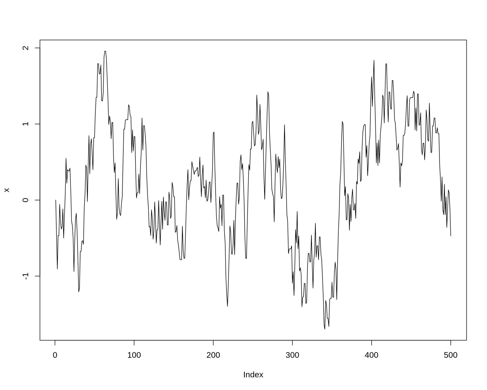
Veja o que acontece se aumentarmos o valor de \(\delta\)
f <- function(x) dnorm(x, 0, 1)
delta <- 2
N <- 500
x2 <- numeric(N)
x2[1] <- 0
set.seed(2019-10-11)
for(i in 2:N) {
z <- runif(1, -delta, delta)
y <- x2[i - 1] + z
alpha <- min(f(y)/f(x2[i - 1]), 1)
u <- runif(1)
if(u <= alpha) {
x2[i] <- y
} else {
x2[i] <- x2[i - 1]
}
}
plot(x2, type = "l")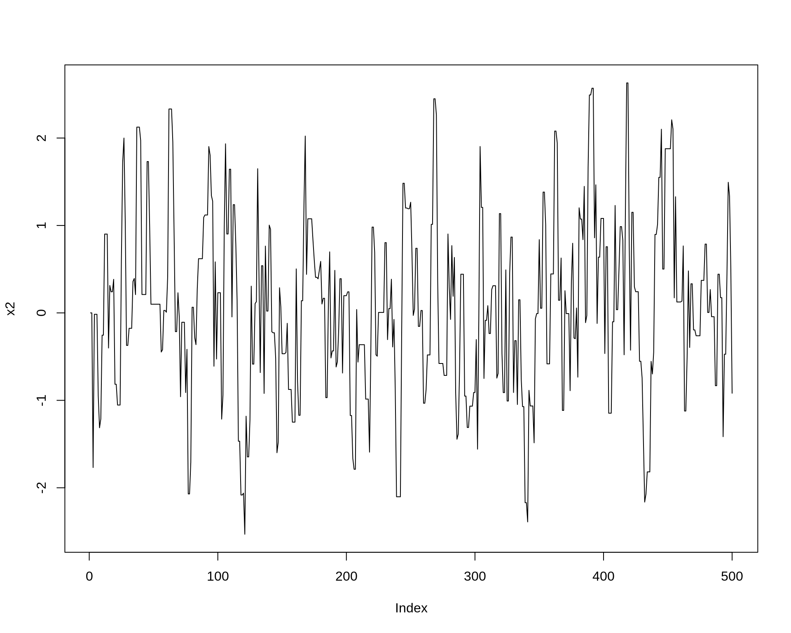
Compara a distribuição das amostras com a distribuição teórica
par(mfrow = c(1, 2))
plot(ecdf(x))
curve(pnorm(x), add = TRUE, col = 2)
plot(ecdf(x2))
curve(pnorm(x), add = TRUE, col = 2)
par(mfrow = c(1, 1))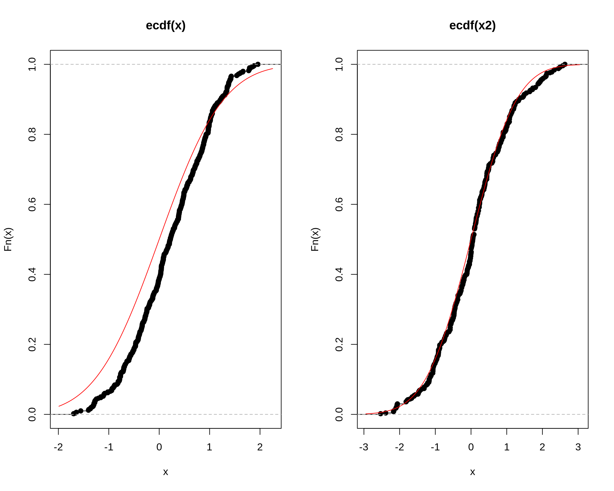
Comparando as duas cadeias
par(mfrow = c(2, 1))
plot(x, type = "l", main = expression(delta == 0.5))
plot(x2, type = "l", main = expression(delta == 2))
par(mfrow = c(1, 1))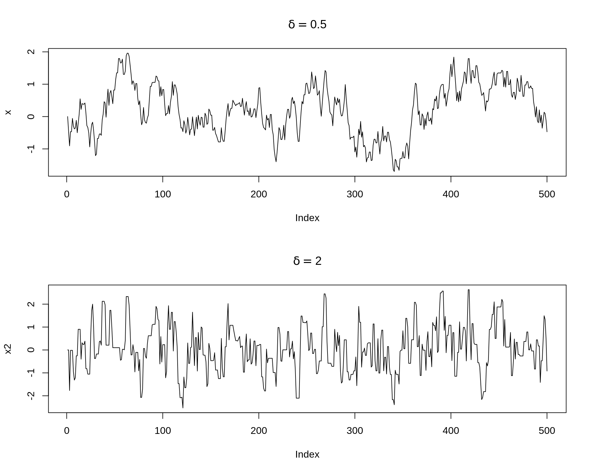
No primeiro caso, os valores propostos ficam muito próximos do valor atual, e quase sempre serão aceitos. No entanto, levará muitas iterações até o algoritmo cobrir todo o espaço de \(X\).
No segundo caso, a taxa de rejeição é excessivamente alta e a cadeia se movimenta muito pouco, pois os valores propostos podem ficar muito longe do atual.
Nas duas situações o algoritmo pode ser ineficiente. Na prática temos que testar vários valores de \(\delta\) e monitorar a taxa de aceitação. A partir disso surge um importante conceito em amostradores MCMC: tuning, ou “refinamento”. Em teoria, não existe um valor ideal para \(\delta\), ambas as cadeias irão eventualmente convergir para a distribuição alvo (normal nesse caso). No entanto, a velocidade de convergência e a quantidade de espaço amostral explorado dependem de \(\delta\). Portanto, o amostrador pode ser refinado para melhorar sua eficiência.
Veja também que no primeiro caso, como os valores propostos são mais próximos do atual, eles também terão uma correlação maior.
par(mfrow = c(1, 2))
acf(x, lag.max = 50)
acf(x2, lag.max = 50)
par(mfrow = c(1, 1))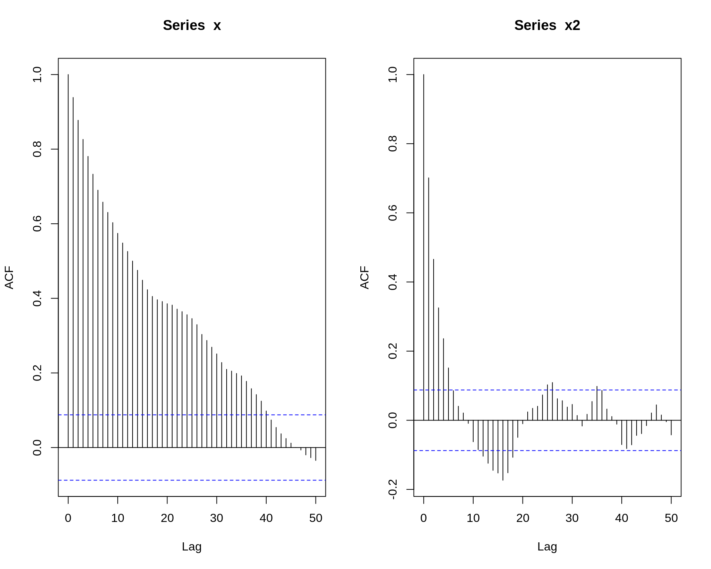
Veja como fica uma animação com o método em funcionamento:
3.2 Exemplo com normal
Considere gerar valores de uma distribuição \(t\) de Student com \(\nu\) graus de liberdade, usando como distribuição proposta uma \(\text{N}(X_t, \sigma)\).
rw.Metropolis <- function(nu, sigma, x0, N) {
f <- function(x, nu) dt(x, nu)
x <- numeric(N)
x[1] <- x0
u <- runif(N)
for(i in 2:N) {
z <- rnorm(1, mean = 0, sd = sigma)
y <- x[i - 1] + z
alpha <- min(f(y, nu)/f(x[i - 1], nu), 1)
u <- runif(1)
if(u <= alpha) {
x[i] <- y
} else {
x[i] <- x[i - 1]
}
}
return(x)
}Supondo que queremos gerar uma distribuição \(t(\nu = 4)\). Vamos fazer isso com valores diferentes de \(\sigma\) da distribuição normal proposta.
nu <- 4
N <- 2000
sigma <- c(.05, .5, 2, 16)
x0 <- 25
rw1 <- rw.Metropolis(n, sigma[1], x0, N)
rw2 <- rw.Metropolis(n, sigma[2], x0, N)
rw3 <- rw.Metropolis(n, sigma[3], x0, N)
rw4 <- rw.Metropolis(n, sigma[4], x0, N)
## Resultado das cadeias
par(mfrow = c(2, 2))
refline <- qt(c(.025, .975), df = n)
rw <- cbind(rw1, rw2, rw3, rw4)
for (j in 1:4) {
plot(rw[, j], type = "l",
main = bquote(sigma == .(round(sigma[j], 3))),
ylab = "X", ylim = range(rw[, j]))
abline(h = refline)
}
par(mfrow = c(1, 1))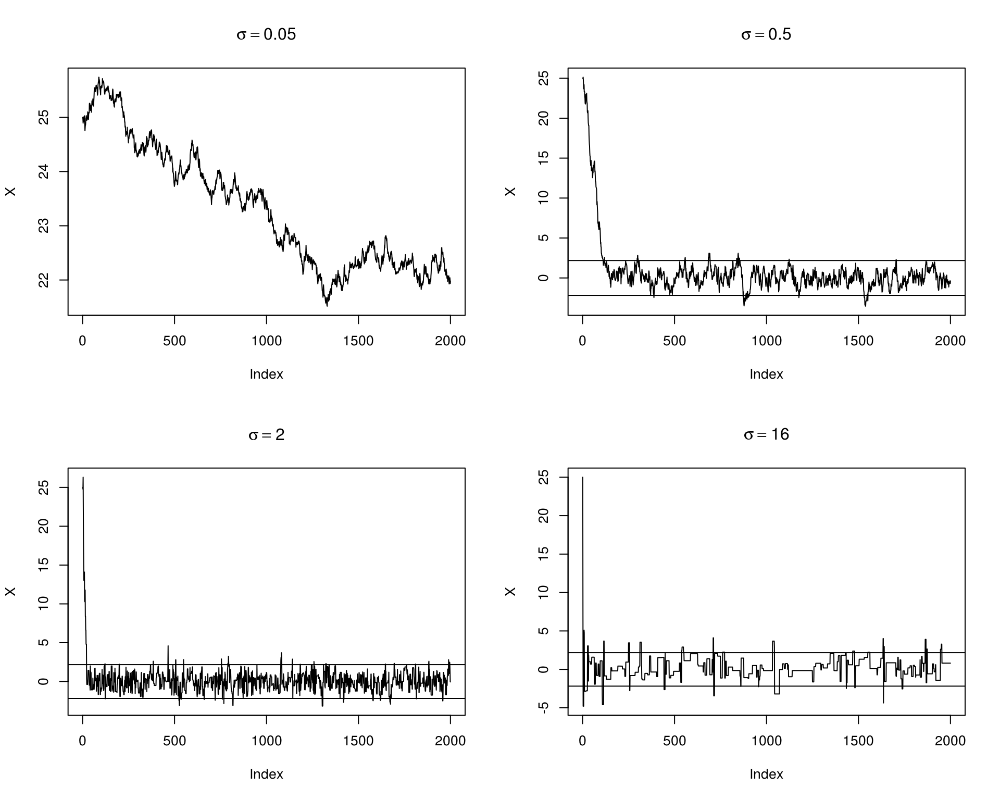
- Com \(\sigma = 0.05\) a probabilidade de aceitação \(\alpha\) tende a ser grande, portanto quase todos os valores candidatos são aceitos. Os incrementos são pequenos e a cadeia não converge para a distribuição estacionária.
- Com \(\sigma = 0.5\), converge lentamente para a distribuição estacionária. Isso mostra que é importante definir um período de burn-in ou aquecimento da cadeia, descartando os primeiros valores gerados.
- Com \(\sigma = 2\), a cadeia possui uma boa mistura e converge rapidamente para a distribuição estacionária.
- Com \(\sigma = 16\), a probabilidade de aceitação \(\alpha\) é pequena, e a maioria dos valores candidatos são rejeitados. A cadeia converge, mas é ineficiente.
4 Amostrador independente
Outro caso particular do método geral de Metropolis-Hastings é o chamado amostrador independente. Nesse caso, a particularidade é que a distribuição proposta não depende mais de valores anteriores da cadeia, ou seja,
\[ g(Y|X_t) = g(Y) \]
Dessa forma, a probabilidade de aceitação simplifica para
\[ \begin{aligned} \alpha(X_t, Y) &= \min \left( \frac{f(Y)g(X_t|Y)}{f(X_t)g(Y|X_t)}, 1 \right) \\ &= \min \left( \frac{f(Y)g(X_t)}{f(X_t)g(Y)}, 1 \right) \\ &= \min \left( \frac{f(Y)}{f(X_t)} \bigg/ \frac{g(X_t)}{g(Y)}, 1 \right) \end{aligned} \]
Note que, embora os valores de \(Y=X_{t+1}\) sejam gerados de forma independente, a cadeia resultante não será iid, já que a probabilidade de aceitação ainda depende de \(X_t\).
O amostrador independente é de fácil implementação, mas tende a funcionar bem apenas quando a distribuição proposta é parecida (em forma) com a distribuição alvo.
Assim, o método do amostrador independente pode ser definido da seguinte forma:
- Defina uma distribuição proposta \(g\) similar à distribuição alvo
- Defina um valor inicial \(X_0\), dentro do domínio de \(g\)
- Repita os seguintes passos até convergir para uma distribuição estacionária:
- Gere um valor candidato \(Y\) a partir de \(g\)
- Gere \(U\) de uma \(\text{U}(0,1)\)
- Calcule a taxa de aceitação \[ \alpha(X_t, Y) = \min \left( \frac{f(Y)g(X_t)}{f(X_t)g(Y)}, 1 \right) \] Se \[ U \leq \alpha(X_t, Y) \] aceite \(Y\) e faça \(X_{t+1}=Y\); caso contrário faça \(X_{t+1}=X_t\)
4.1 Exemplo (beta)
## Gerar números de uma distribuição Beta usando a distribuição Uniforme
## e/ou normal.
## Distribuição alvo: X ~ Beta(2, 3)
f <- function(x) dbeta(x, shape1 = 2, shape2 = 3)
curve(f, 0, 1)
## Distribuição candidata (proposal): X ~ Uniforme(0,1)
g <- function(x) dunif(x, 0, 1)
## Gráfico das densidados sobrepostas.
curve(f, 0, 1)
curve(g, add=TRUE, col=2)
legend("topright", legend=c("Alvo", "Candidata"), lty=1, col=1:2,
bty="n")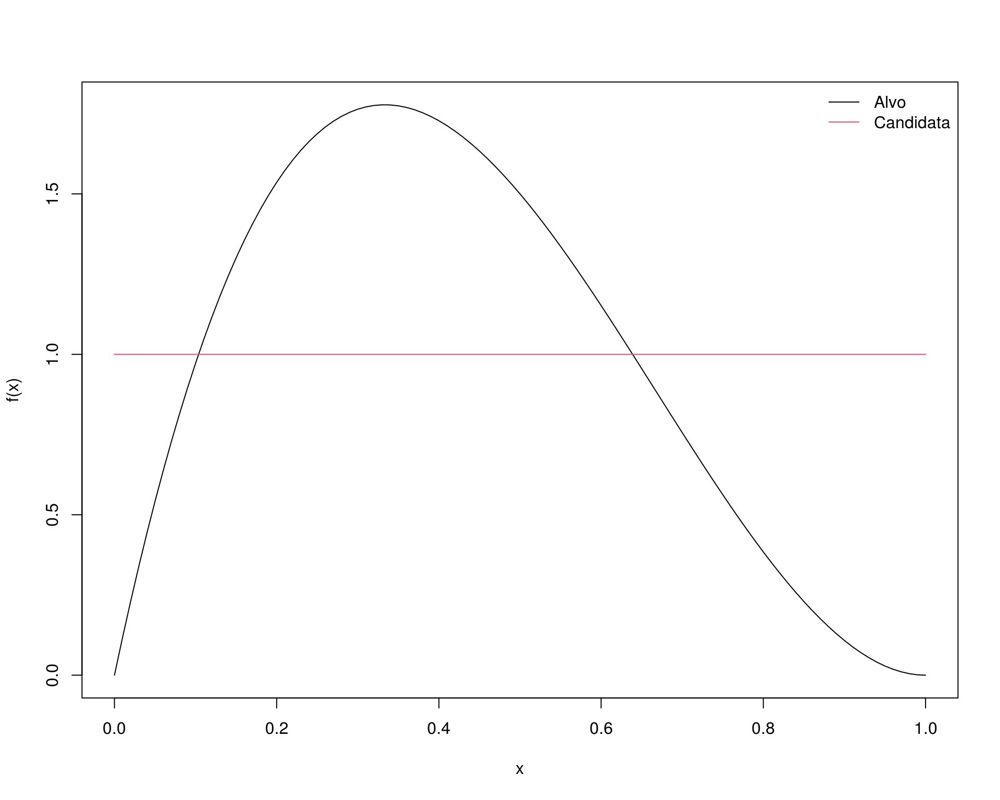
N <- 500
x <- numeric(N)
x[1] <- 0.5
set.seed(2019-10-11)
for(i in 2:N) {
y <- runif(1) # Distribuição proposta
alpha <- min((f(y) * g(x[i - 1])) / (f(x[i - 1]) * g(y)), 1)
u <- runif(1)
if(u <= alpha) {
x[i] <- y
} else {
x[i] <- x[i - 1]
}
}
## Cadeia
plot(x, type = "l")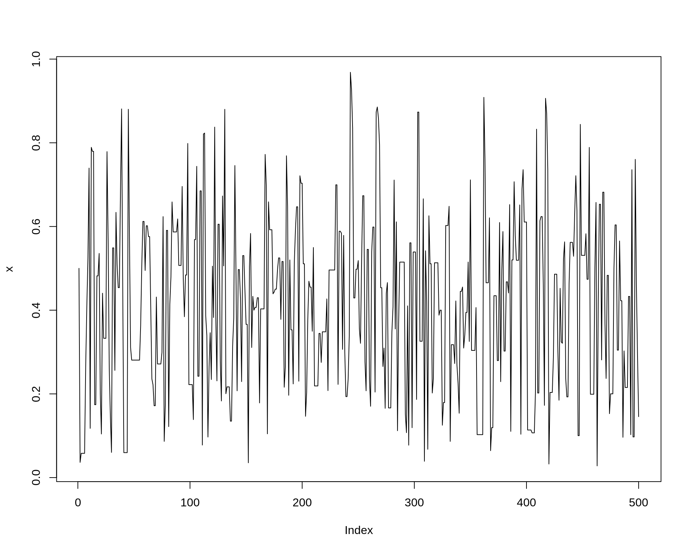
## Compara com teorica
plot(ecdf(x))
curve(pbeta(x, 2, 3), add = TRUE, col = 2)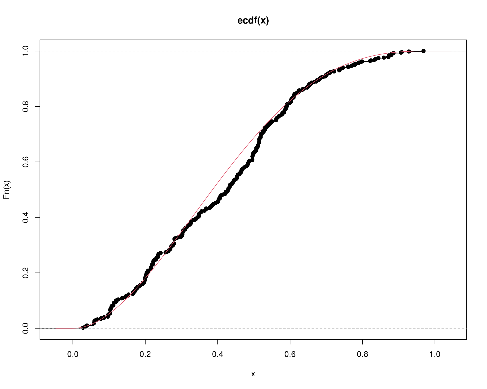
Veja como fica uma animação com o método em funcionamento:
Outro exemplo:
## Distribuição alvo: X ~ Beta(2, 3)
f <- function(x) dbeta(x, shape1 = 2, shape2 = 3)
curve(f, 0, 1)
## Distribuição candidata (proposal): X ~ Normal(0.5, 0.25)
g <- function(x) dnorm(x, 0.5, 0.25)
## Gráfico das densidados sobrepostas.
curve(f, 0, 1)
curve(g, add=TRUE, col=2)
legend("topright", legend=c("Alvo", "Candidata"), lty=1, col=1:2,
bty="n")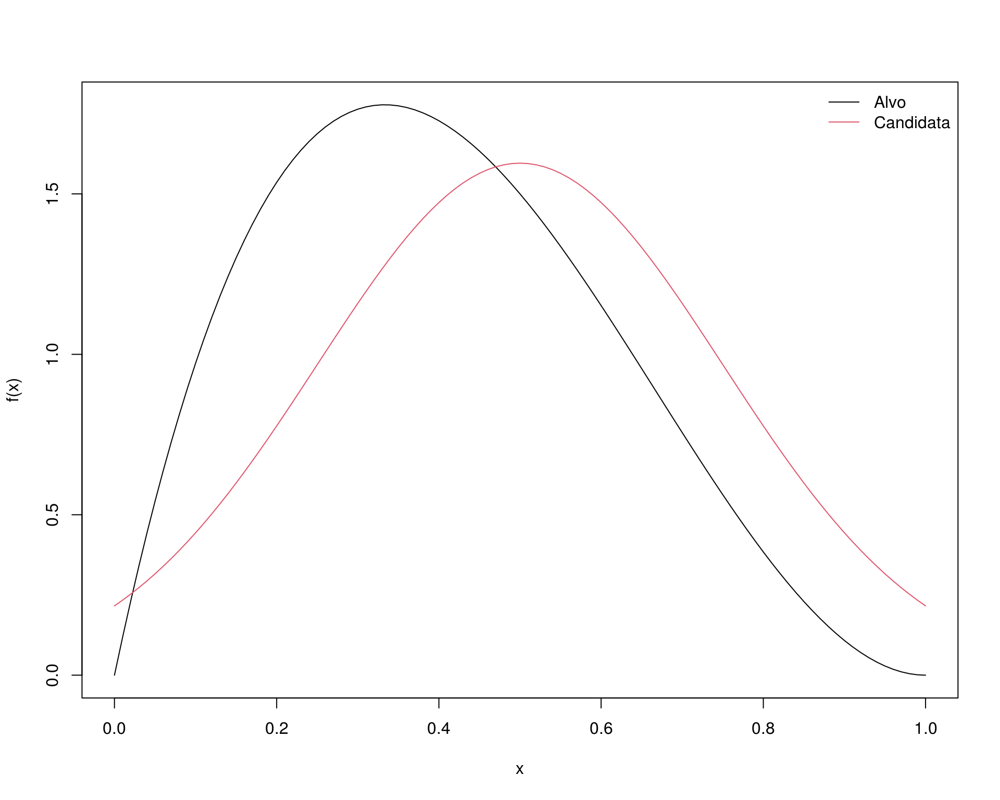
N <- 500
x2 <- numeric(N)
x2[1] <- 0.5
set.seed(2019-10-11)
for(i in 2:N) {
y <- rnorm(1, 0.5, 0.25) # Distribuição proposta
alpha <- min((f(y) * g(x2[i - 1])) / (f(x2[i - 1]) * g(y)), 1)
u <- runif(1)
if(u <= alpha) {
x2[i] <- y
} else {
x2[i] <- x2[i - 1]
}
}
## Cadeia
plot(x2, type = "l")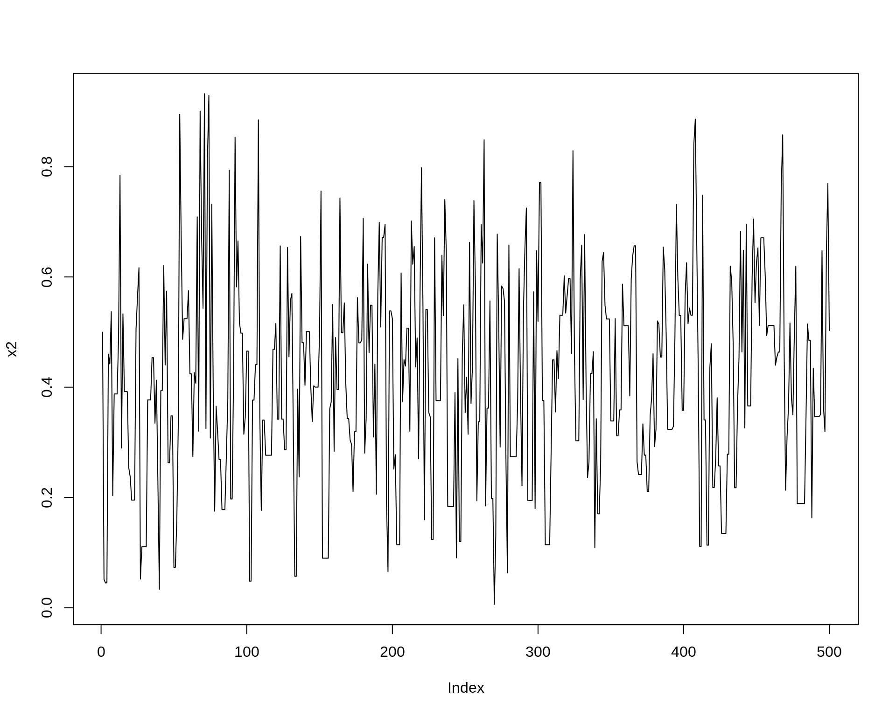
## Compara com teorica
plot(ecdf(x2))
curve(pbeta(x, 2, 3), add = TRUE, col = 2)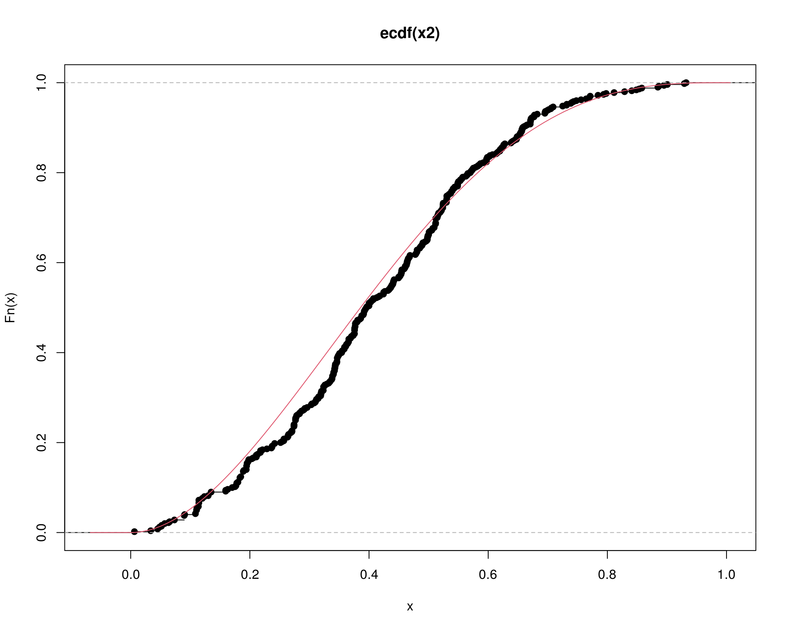
Veja como fica uma animação com o método em funcionamento:
Comparando as cadeias geradas com as duas diferentes propostas:
par(mfrow = c(2, 2))
plot(x, type = "l")
plot(x2, type = "l")
acf(x)
acf(x2)
par(mfrow = c(1, 1))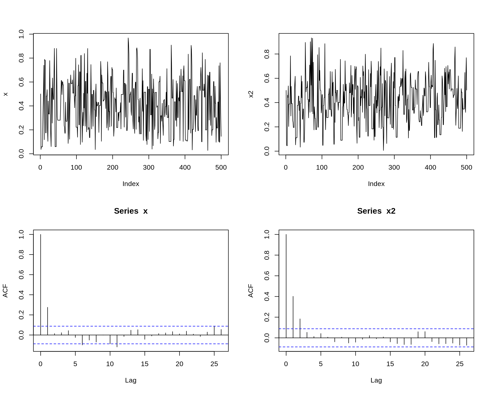

Este conteúdo está disponível por meio da Licença Creative Commons 4.0